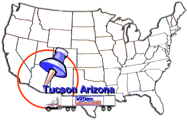
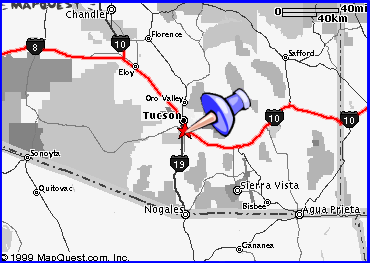
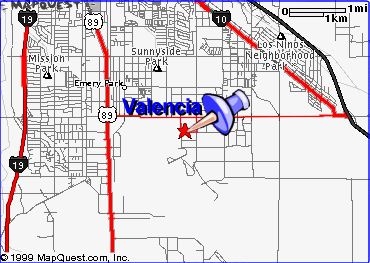
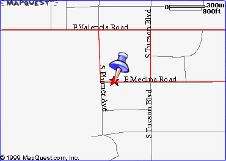

|
Location |
| Archived site · Whitmark Inc., Tucson, Arizona, 1985–2000 · Restored from the Internet Archive |
|
Location |

Location |
||||
Search The Internet |

View of location and main service area in USA.

Whitmark Inc., 2201 E. Medina, Tucson, Arizona 85706

Maps provided below are modified from http://www.mapquest.com/

View of lower State Location


View of Street Location in the City of Tucson.


Close view of street map showing location from Valencia Rd.


General Contact Information:
http://www.whitmark.com pkg@whitmark.com
2201 E. Medina, Tucson, Arizona 85706 USA
1-800-825-0707 (520) 573-7080 Fax # (520) 745-8831
© Copyright 1999 Whitmark Inc. All material on this site is reserved.
v1.0